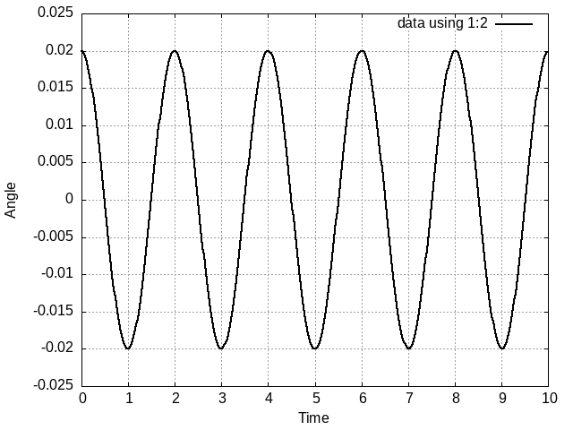

Jefter Santiago

Find me on
- Email: jefterrsantiago@gmail.com
- Twitter: @jefter66
- Instagram: jeftersantiago
- Telegram: jefter66
- Github: jeftersantiago
Literate programming using org-mode
Introduction
This is a simulation of a simple pendulum system with the code in
Fortran and ploting made using Gnuplot.
The calculations for the angular velocity and angle variation are made using the following equations: \[ \omega_{i+1} = w_i - \frac{g}{l}\cdot \theta _i \cdot \Delta t \quad \text{ and } \quad \theta _{i+1} = \theta _i + \omega_i \cdot \Delta t \] We give an startup value for the angle \( \theta_0 \), the time \( t_0 = 0 \) and angular velocity \( \omega_0 = 0 \). I choose the variation \( dt \) arbitrarily.
The code
implicit none integer, parameter :: n = 500 real, parameter :: g = 9.81 real, parameter :: l = 1.0 real, dimension(n) :: w, t real, dimension(n) :: theta real, parameter :: dt = 0.02 integer :: i theta(1) = 0.02 w(1) = 0 t(1) = 0 do i = 1, n-1 w(i+1) = w(i) - (g/l) * theta(i) * dt theta(i+1) = theta(i) + w(i+1) * dt t(i+1) = t(i) + dt end do do i = 1, n print *, t(i) , theta(i) end do
You can run this on Emacs by using the combining keys
C-c C-c and it will generate the results has a table named
simple_pendulum the table values can be plotted using you
plotting software of preference.
Plotting
By running the Gnuplot code (the same command used to run the Fortran
code) it generates an image saved in the same folder as the .org file is
located and added to te .org file.
set xrange[*:*] noreverse writeback set yrange[*:*] noreverse writeback set grid set style line 1 lt 1 lc "black" lw 2 set key right top set xlabel "Time" set ylabel "Angle" plot data using 1:2 with line ls 1

Figure 1: Simple pendulum simulation.